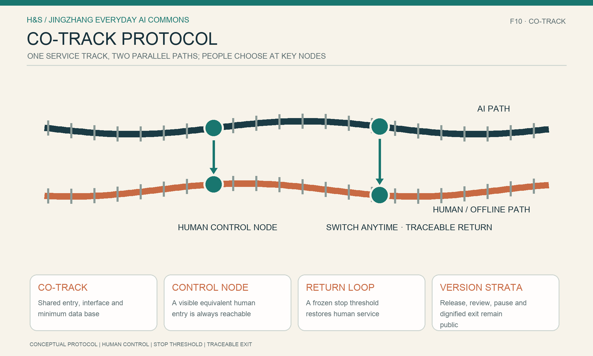
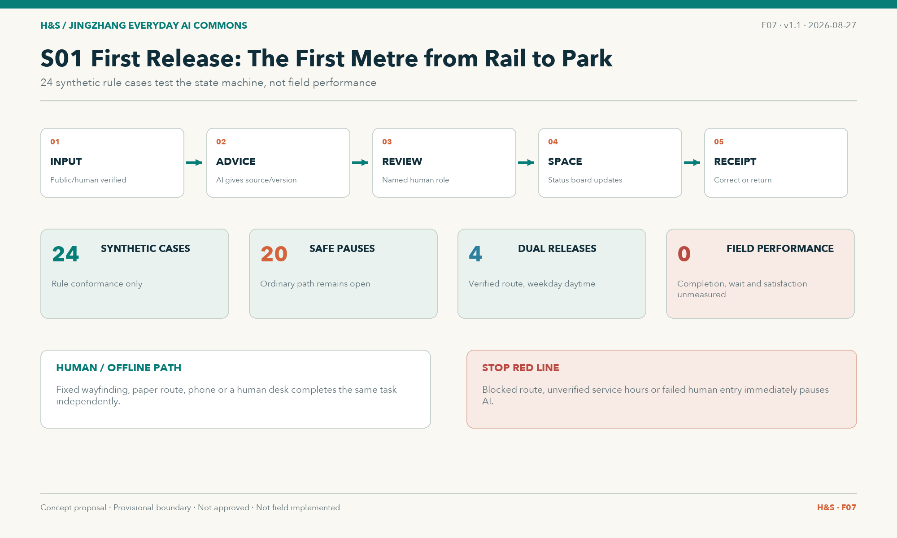
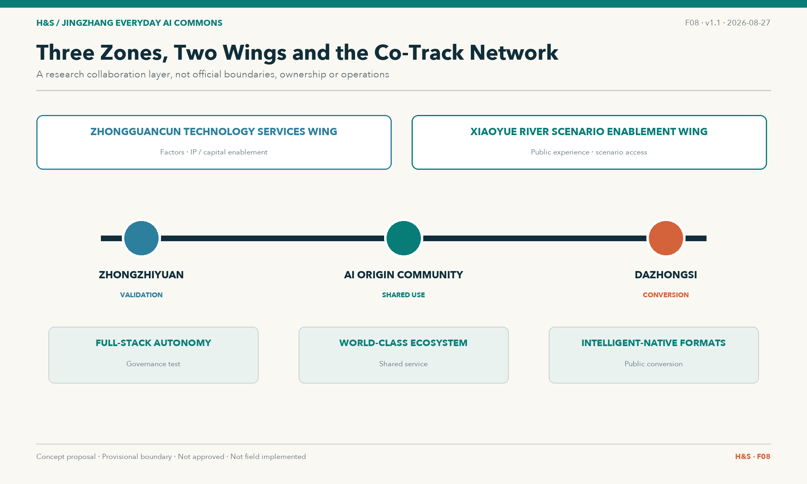
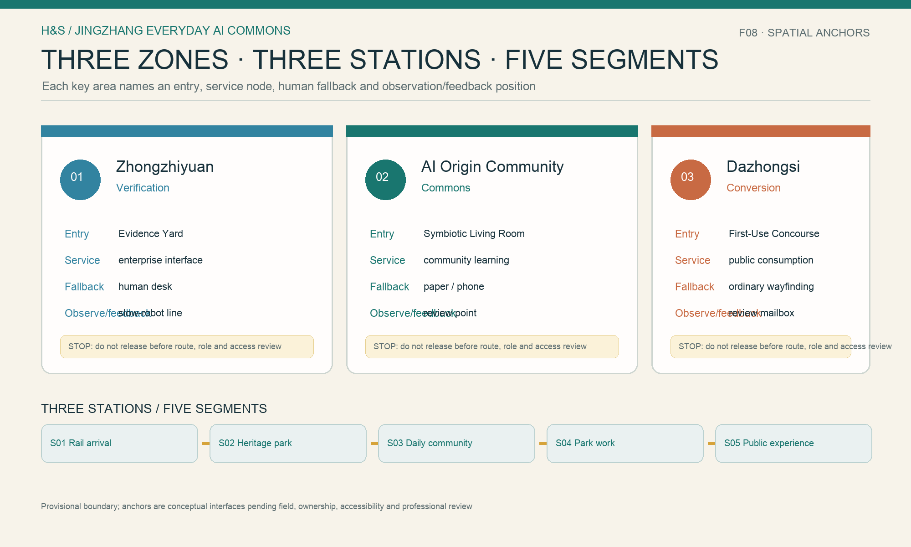
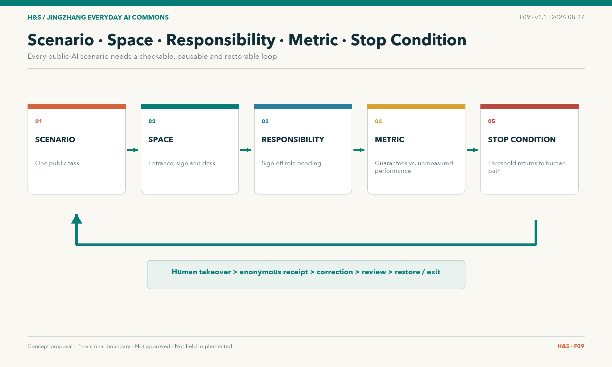
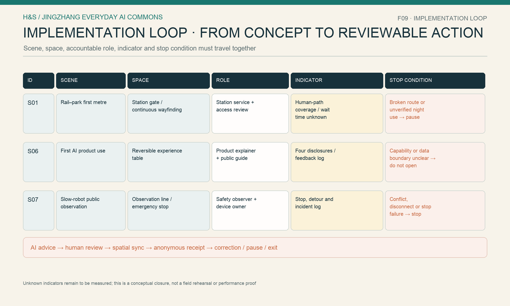

Two paths, one base
Teal control nodes keep choice human; a threshold pauses AI and restores ordinary service.
JINGZHANG EVERYDAY AI COMMONS
Three stations and five segments turn an AI innovation belt into an everyday public path that people can understand, choose, reverse and review.
Co-Track Protocol: Shared track, every way works.

Teal control nodes keep choice human; a threshold pauses AI and restores ordinary service.
Three stations, five segments and KEY/ST/SEG IDs link directly to S01/S06/S07.
Provisional boundary, service hours, accountable roles and performance indicators remain provisional/unknown.
Sign off entries and fallback points first; then freeze thresholds and decide on a low-risk pilot.
AI and human paths share an entrance, interface, feedback loop and minimum data base.
A visible equivalent human path can be chosen at any time without forced registration.
A blocked route, missing human access or boundary breach pauses AI and restores ordinary service.
Every review, pause, takeover and exit preserves a source and version.
| Output | Spatial anchor | Public fields |
|---|---|---|
| Agent contribution honor wall | Symbiotic Markers | Agent/GitHub, selection year, version, human-review date and pause/takeover count |
| AI milestones | Heritage-park version markers | Verified history, annual versions and offline dividends |
| Open-source results node | Evidence Yard | Forkable protocols, state machines, method kits and failure archives |
| Global developer honor wall | Fellow Travellers Register | Bilingual names, contribution links, reuse map and version history |
All four nodes are conceptual outputs, not approved, built or operational facilities.










Values match metrics.json and the geometry review. They use EPSG:4548, carry low confidence and are not statutory controls. Recalculate when official polygons arrive.